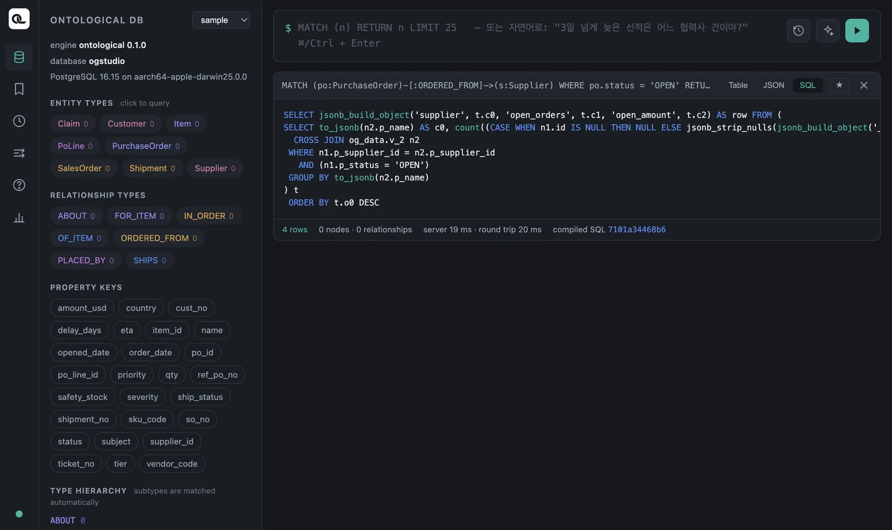
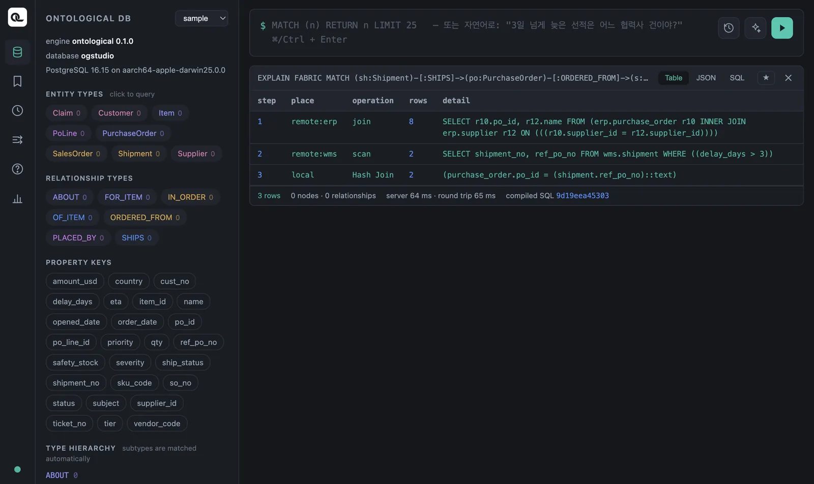
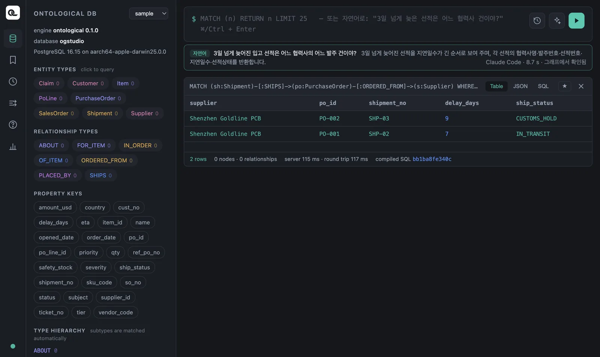

질의가 실제로 어떻게 실행되는지(SQL 번역, 패브릭 실행 계획)를 보고, 자연어로 Cypher를 만들고, 내 그래프를 만들어 노드와 관계를 직접 써 봅니다.
번역된 SQL 보기#
Ontological DB는 Cypher를 PostgreSQL SQL로 번역해서 실행합니다. 결과 카드의 SQL 탭에서 번역 결과를 볼 수 있습니다.
MATCH (po:PurchaseOrder)-[:ORDERED_FROM]->(s:Supplier)
WHERE po.status = 'OPEN'
RETURN s.name AS supplier, count(po) AS open_orders, sum(po.amount_usd) AS open_amount
ORDER BY open_amount DESC

결과 카드 아래쪽의 compiled SQL 668a5ee48536 같은 값은 번역된 SQL의 지문입니다. 같은 Cypher면 시점(10장)을 바꿔도 지문이 같습니다 — 질의는 그대로이고 조건만 바뀐다는 뜻입니다.
패브릭 실행 계획 — EXPLAIN FABRIC#
원천이 여러 DB에 걸친 질의는 어디서 무엇이 실행되는지가 성능을 좌우합니다. 질의 앞에 EXPLAIN FABRIC을 붙이면 단계별 계획을 보여 줍니다.
EXPLAIN FABRIC
MATCH (sh:Shipment)-[:SHIPS]->(po:PurchaseOrder)-[:ORDERED_FROM]->(s:Supplier)
WHERE sh.delay_days > 3
RETURN sh.shipment_no, s.name
| step | place | operation | rows | detail |
|---|---|---|---|---|
| 1 | remote:erp | join | 8 | SELECT r10.po_id, r12.name FROM (erp.purchase_order r10 INNER JOIN erp.supplier r12 ON …) |
| 2 | remote:wms | scan | 2 | SELECT shipment_no, ref_po_no FROM wms.shipment WHERE ((delay_days > 3)) |
| 3 | local | Hash Join | 2 | (purchase_order.po_id = (shipment.ref_po_no)::text) |

읽는 법:
- ERP 안의 조인은 ERP에서 했습니다(발주 ⋈ 협력사). 같은 DB 안의 일은 원천에 맡깁니다.
- WMS에는 조건을 붙여 보냈습니다(
delay_days > 3). 8행 전부가 아니라 2행만 넘어왔습니다. - 서로 다른 DB를 잇는 마지막 조인만 Ontological DB가 했습니다.
원천이 크면 이 차이가 큽니다. 조건이 원천으로 내려가지 않는 질의(예: 두 DB의 값을 서로 비교하는 조건)는 계획에서 local로 보입니다. 그런 질의는 원천의 행을 많이 끌어오므로 조건을 바꿔 볼 만합니다.
말로 묻기 — 자연어 → Cypher#
입력칸에 Cypher 대신 한국어 문장을 쓰고 실행하면, 에이전트가 이 그래프의 스키마를 읽고 Cypher를 만들어 줍니다(첫 낱말이 Cypher 키워드가 아니면 자연어로 봅니다. ✨ 버튼이나 ⇧⌘Enter로도 됩니다).
3일 넘게 늦어진 입고 선적은 어느 협력사의 어느 발주 건이야?

에이전트가 만든 Cypher는 화면에 그대로 보이고, 실행하기 전에 그래프에서 한 번 시험 실행해 봅니다. 실패하면 엔진의 오류 메시지를 보고 한 번 고칩니다. 쓰기 문장(CREATE, SET 등)은 실행하지 않고 입력칸에만 둡니다. 이 예에서는 Claude Code가 8.7초 만에 다음을 만들었습니다.
MATCH (sh:Shipment)-[:SHIPS]->(po:PurchaseOrder)-[:ORDERED_FROM]->(s:Supplier)
WHERE sh.delay_days > 3
RETURN s.name AS supplier, po.po_id AS po_id, sh.shipment_no AS shipment_no,
sh.delay_days AS delay_days, sh.ship_status AS ship_status
ORDER BY sh.delay_days DESC LIMIT 100
자연어는 출발점입니다
만들어진 Cypher를 읽고 고쳐 쓰는 연습을 하세요. 에이전트가 어떤 관계를 골랐는지 보면 스키마를 이해하는 데도 도움이 됩니다. 이 기능은 앱 안의 포털에서만 동작합니다(코딩 에이전트가 필요합니다).
직접 쓰기 — 내 그래프 만들기#
가상 노드는 읽기 전용이지만, Ontological DB에 저장되는 노드는 Cypher로 자유롭게 쓸 수 있습니다. 예제를 건드리지 않도록 연습용 그래프를 만듭시다. 그래프 선택과 상관없이 실행됩니다.
CREATE GRAPH tut
이제 그래프 선택에서 tut을 고르고(목록에 안 보이면 포털을 새로 고침), 노드를 만듭니다.
CREATE (:Employee {emp_no: 'E1', name: '김하늘', dept: '구매', salary: 4200})
CREATE (:Employee {emp_no: 'E2', name: '박바다', dept: '물류', salary: 3900})
관계를 만들려면, 먼저 양쪽 노드를 MATCH로 찾은 뒤 CREATE합니다. 관계에도 속성을 붙일 수 있습니다.
MATCH (a:Employee {emp_no: 'E1'}), (b:Employee {emp_no: 'E2'})
CREATE (a)-[:MENTORS {since: '2025-03'}]->(b)
MATCH (a:Employee)-[m:MENTORS]->(b:Employee)
RETURN a.name, m.since, b.name
결과: 김하늘 · 2025-03 · 박바다.
고치기·지우기#
| 하고 싶은 일 | 문장 |
|---|---|
| 값 바꾸기 | MATCH (e:Employee {emp_no:'E1'}) SET e.salary = 4500 RETURN e.salary |
| 없으면 만들기 | MERGE (d:Dept {name:'구매'}) RETURN d.name |
| 없으면 관계 만들기 | MATCH (e:Employee), (d:Dept {name:'구매'}) WHERE e.dept = d.name MERGE (e)-[:WORKS_IN]->(d) |
| 노드와 그 관계 지우기 | MATCH (e:Employee {emp_no:'E2'}) DETACH DELETE e |
MERGE는 같은 모양이 이미 있으면 그것을 쓰고, 없으면 만듭니다. 두 번 실행해도 Dept 노드가 하나만 생깁니다. DETACH DELETE는 노드에 붙은 관계까지 함께 지웁니다(관계가 남아 있으면 그냥 DELETE는 거절됩니다).
온톨로지 그래프는 Studio에게
ontology 그래프는 Studio가 관리합니다. 클래스 정의(_OntologyClass 같은 노드)와 액션 정의가 함께 들어 있으므로, 포털에서 직접 고치지 말고 「온톨로지 구축」 화면과 에이전트로 다루세요. 직접 쓰기 연습은 이렇게 따로 만든 그래프에서 합니다.
저장과 기록#
- 결과 카드의 ★는 질의를 저장합니다. 왼쪽 레일의 책갈피 아이콘에서 다시 꺼냅니다.
- 입력칸에서 ↑↓로 이전 질의를 불러옵니다. 시계 아이콘 목록에는 이 그래프에 최근 일어난 쓰기(감사 기록)가 보입니다.
Ontological DB의 Cypher — 알아 둘 차이#
Neo4j의 Cypher를 이미 안다면 다음 차이만 기억하세요.
| 항목 | Ontological DB 0.1 |
|---|---|
| 라벨 | 패턴의 노드마다 라벨을 적는 것이 원칙. WHERE n:Label 형태의 라벨 조건은 쓰지 않습니다. |
| 하위 질의 | EXISTS { … }, CALL { … }는 아직 없습니다 → OPTIONAL MATCH … IS NULL |
| 가변 길이 경로 | -[:R*1..3]->는 저장된 관계에서만 됩니다. 가상 관계에는 아직 안 됩니다. |
| 날짜 | date() 함수가 없습니다 → 날짜 컬럼과 'YYYY-MM-DD' 문자열을 바로 비교 |
| 함수 | 7장의 목록만. 없는 함수를 쓰면 오류가 지원 목록을 알려 줍니다. |
| 가상 노드 | 읽기 전용 — 값은 원천 시스템(또는 액션)으로 바꿉니다 |
| 더 있는 것 | SHOW … 패브릭 문장, EXPLAIN FABRIC, 시간 여행(10장), 상위 라벨로 하위 타입까지 찾기 |
확인 문제
EXPLAIN FABRIC으로 “클레임 → 판매 주문 → 고객” 질의(8장)의 계획을 보세요. 이 질의는 원천을 몇 군데 건드리나요?tut그래프에Dept {name:'물류'}를MERGE로 두 번 만들고,MATCH (d:Dept) RETURN d.name, count(*)로 몇 개인지 확인하세요.- 자연어로 “납땜 불량 클레임을 낸 고객은 누구야?”라고 물어보고, 에이전트가 만든 Cypher가 8장의 답과 같은 결과를 내는지 비교하세요.
정답 보기
- 세 노드가 모두 CRM에 있으므로 원천 한 곳(
remote:crm)에서 조인까지 끝납니다. 같은 DB 안의 일은 원천에 맡기는 것을 확인할 수 있습니다. MERGE는 이미 있으면 새로 만들지 않으므로물류행의 개수는 1입니다(앞에서 만든구매도 1).- Tokyo Devices(SO-05, T-3 「PCB 납땜 불량」)가 나와야 합니다. 에이전트의 질의는 매번 조금씩 다를 수 있지만 결과는 같아야 합니다.